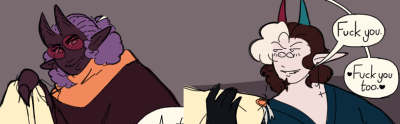
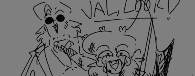

Valentine Heartman

Fruity little fat bard and adventurer fuckhead. The way in which he fits the bill is generally being neutral to, and maybe a little to eager to kill people and things that he considers morally objectionable, in the way, or slightly offending his closest circle. Also being one of those people who just can't fit into the usual flow of society and 'standard' jobs.
Not just a hater and freak though, but a lover too, with two beautiful men and a beatutiful enby as his husbands, and an extensive found family of other outsiders and leftovers and afterthoughts.

History
A miserable and depressing relationship turned Val into a miserable and depressed creature, but the creature in question found his strength to leave and did. Disappearing off into the night, nothing more than a ghost to the person that made him that way, and then reinventing himself as the person who was meant to be before being sidetracked by being put through hell.
Meeting Moth while trying to star a career of adventuring right after escaping that situation, they became one of his closest friends and questing companions. Questing and adventuring, of which there was much to be had, and stories to be told of. In between that though, more friends and allies and future loves would be made.
Relations

Barrett is the Solborne Succubus to Val's Noxborne. Arguably one of the first loves, their first hookup was a chance meeting at an inn where both needed energy, which sealed a deal unknown to them, completely unaware that succubi inherited their Wyrm ancestor's ability to form a life long bond through sex. After that be it some string of fate, deliberate action, or chance, they would keep meeting up and enjoying each other's company, sexual and otherwise.
Where Val assumed he might never get him to stay the night, to see that he had feelings for him, it eventually came to pass that Barrett found *his* feelings for Val, and confessed. Now happily married and in love, and bonded for life they are borderline inseparable, and like Barrett, is now subject to separation anxiety, clinginess, jealousy and the like, dammed genetics.
Despite leaving after the whole calamity issue was settled, Sandy was the first real relationship in his life. Having no way to fuel his succubi needs, with no other particularly desirable or eligible sexual partners in the adventuring party during the early days of the calamity, it started as an agreement between the two. It became more. Of course it did, it was warmth in the cold of the horrors. Regrettably, Sandy was the one to break it off for fear of involving Val in past troubles, but one determined little Solborne succubus and her aunties tracked them down and brought them back home. Home being Val. Val, never letting go again.

His fellow fight freak and beloved, John is a newer face in his life, but occupying a John sized place in his heart all the same. A couple of people who felt left behind after the world moved on from their contributions finding solace in each other, keen to not let the other feel like an afterthought. There might a chance to make a mark again, sooner than anyone realizes though, but even if that should come to pass, the most important mark they've left is what they've made together and the weird family shaped thing that's formed around them

Moth Two people fresh out of bad spots in their lives who had very few friends, became close friends, even family through adventures prior to, during, and after the calamity. What do you say about two people who will wordlessly have each other's backs the second trouble arises, and ask questions later?

LaloweA close friend, more like family at present. Meeting during the start of The Invasion, she stayed close by, camping with The Crew, for safety, even after finding Barrett again and getting to the city, right until the worst of the fighting broke out in the city itself. Val, Lalowe, Moth, and Barrett orbited around the same places because everyone was in a very liminal place in their lives, old hat for some, a new experience for others. She never really left, and instead came to live with Val, John, and with her help, Barrett and Sandy.
Art
from others
 By @thekamki.bsky.social
By @thekamki.bsky.social
 By Doon
By Doon
 By Doon
By Doon
 By Doon
By Doon
![- Val is walking towards a door, thinking about his husbands after what he considers a mission success
- Zephyr, a blond, elven archer, is sitting naked on the floor, hearing on his archer cap, the Dildo of Selection landing on Val.
- Zephyr: Aww, you weren't leaving just yet, were you?
- Val pauses for a few seconds before looking down at a sundial on his wrist to check the time.
- Val: I got a few minute. (Don't wanna be rude after all.)
- It cuts to Zephyr fucking Val from behind on top of his cloak, the horned man blushing as he cums onto his cloak.](/assets/art4me/spinthebottleVAL_lewdicat.png) By @lewdicat.bsky.social
By @lewdicat.bsky.social
 By @tikinky.bsky.social
By @tikinky.bsky.social
 By Doon
By Doon
 By Doon
By Doon
 By Doon
By Doon